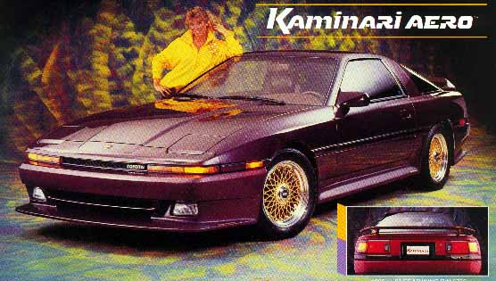
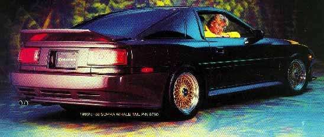

Kaminari has done it again! The newest Supra Aero package carries on the tradition of dramatic Kaminari styling that perfectly enhances the original lines of the car. As pictured, the Kaminari package for the 1986.5-88 Supra includes a front air dam and a rear skirt which completely replace the original plastic bumper covers, full-length side skirts, and a choice of two different wing styles. These Kaminari replacement parts bolt into existing factory mounting holes. The 1986.5-88 Kaminari air dam uses the factory driving lights in their original position, thus no modification here is necessary.